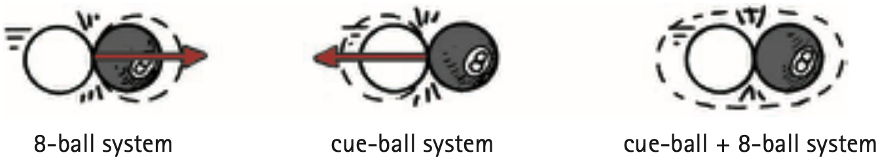

Conservation of Momentum
From Newton’s second law, you know that to accelerate an object, a net force must be applied to it. This chapter states much the same thing, but in different language. If you wish to change the momentum of an object, exert an impulse on it.
Only an impulse external to a system can change the momentum of the system. Internal forces and impulses won’t work. For example, the molecular forces within a baseball have no effect on the momentum of the baseball, just as a push against the dashboard of a car you’re sitting in does not affect the momentum of the car. Molecular forces within the baseball and a push on the dashboard are internal forces. They come in balanced pairs that cancel to zero within the object. To change the momentum of the ball or the car, an external push or pull is required. If no external force is present, then no external impulse is present, and no change in momentum is possible.
As another example, consider the cannon being fired in Figure 6.11. The force on the cannonball inside the cannon barrel is equal and opposite to the force that causes the cannon to recoil. Since these forces act for the same duration of time, the impulses are also equal and opposite. Recall Newton’s third law about equal and opposite action and reaction forces. It applies to impulses, too. These impulses are internal to the system comprising the cannon and the cannonball, so they don’t change the momentum of the cannon–cannonball system. Before the firing, the system is at rest and the momentum is zero. After the firing, the net momentum, or total momentum, is still zero. Net momentum is neither gained nor lost.

Momentum, like the quantities velocity and force, has both direction and magnitude. It is a vector quantity. Like velocity and force, momentum can be canceled. So, although the cannonball in the preceding example gains momentum when fired and the recoiling cannon gains momentum in the opposite direction, there is no gain in the cannon–cannonball system. The momenta (plural form of momentum) of the cannonball and the cannon are equal in magnitude and opposite in direction.2 Therefore, as vectors, they add to zero for the system as a whole. Since no net external force acts on the system, there is no net impulse on the system and no net change in momentum. You can see that, if no net force or net impulse acts on a system, the momentum of that system cannot change.

When momentum, or any quantity in physics, does not change, we say it is conserved. The idea that momentum is conserved when no external force acts is elevated to a central law of mechanics, called the law of conservation of momentum, which states:
In the absence of an external force, the momentum of a system remains unchanged.
In any system in which all forces are internal—as, for example, cars colliding, atomic nuclei undergoing radioactive decay, or stars exploding—the net momentum of the system before and after the event is the same.